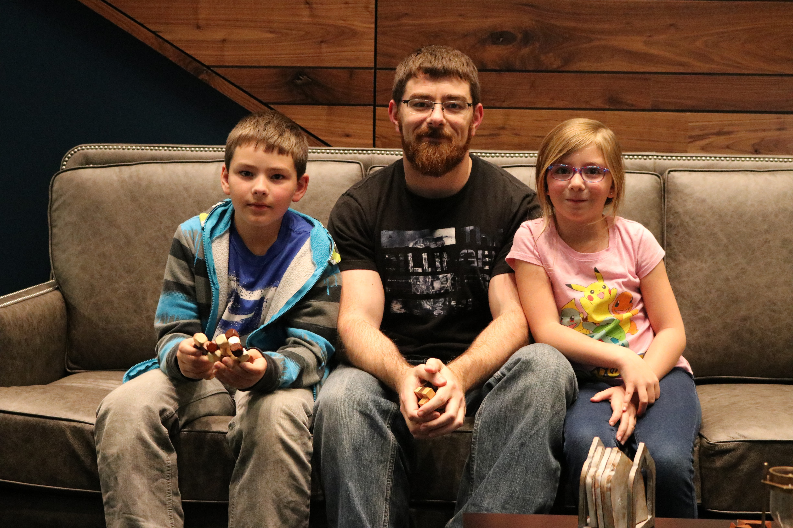
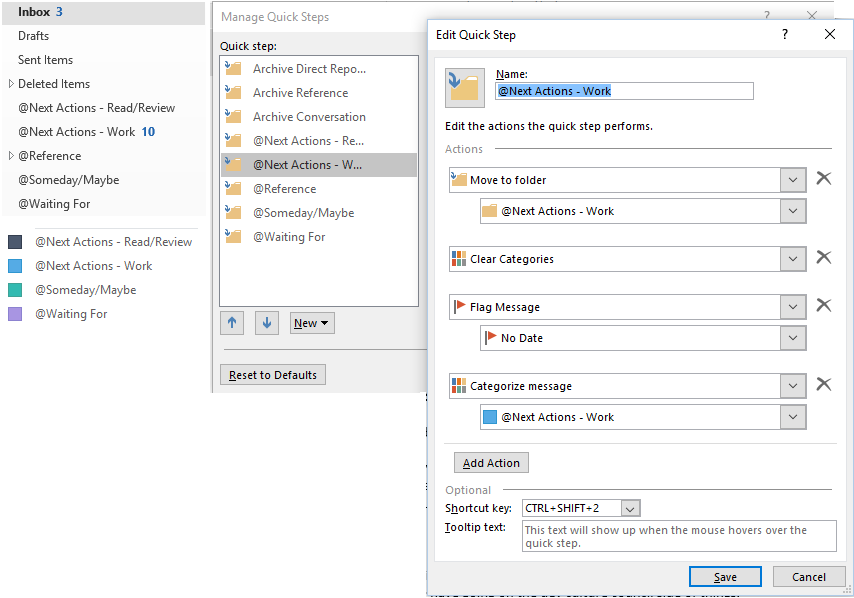
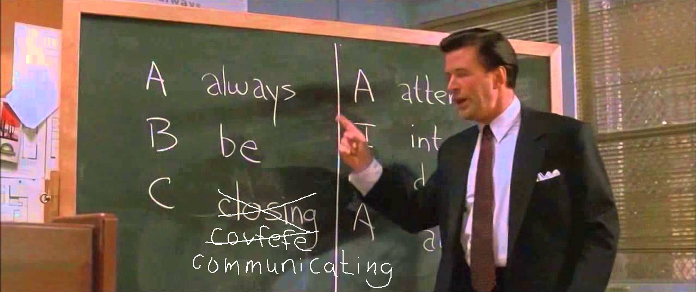
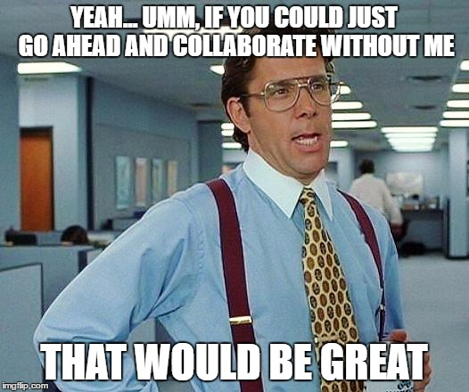
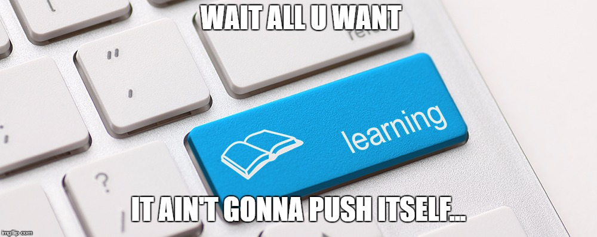
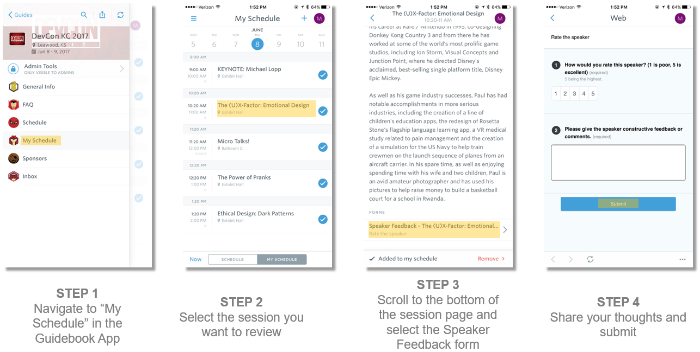

Cultivating Leadership Skills
Pragmatic Advice for Software Engineers
(Brandon Rockhold / Lead Architect / @BrandonRockhold)About me...
You may remember me from such DevCon presentations as...

- What's that smell??? It's your code bro, it needs cleaned
- Yo dawg, I herd you like platforms, so I put a platform in your platform
- Crafting a Legacy Devoid of Legacy Code
- The Evolution of the Devil's Snare
Overview
- How to yell effectively
- Getting others to do your bidding against their will
- Fostering "healthy" levels of fear
- Accomplishing your goals at the expense of others' health and happiness
- Refusing to admit mistakes even in the face of non-alternative facts
Overview
- How to yell effectively
- Getting others to do your bidding against their will
- Fostering "healthy" levels of fear
- Accomplishing your goals at the expense of others' health and happiness
- Refusing to admit mistakes even in the face of non-alternative facts
- lol...j/k, bro; don't fire me
Overview... Srsly
-
Overcoming the challenges of transitioning from individual to team contributor
- Fractured schedules
- Too much to do, too little time
-
Building a healthy team culture (as an informal or formal leader)
- Increased need for effective communication and collaboration
- Developing the skills of and relying upon others for success
- Growing your own leadership skills
Clarifying statements about leadership
- Leadership != Management
- Influence as a leader != Manipulation through authority
- Leadership is about integrity, vision, and getting others to voluntarily follow you
Disclaimer
- I can't solve all your problems (or all of mine, unfortunately)
- As I continue to learn and improve daily, my approaches evolve
- These things have helped me, but your mileage may vary
- I learned most of this through reading
- Just because I've learned it does not mean that I practice it perfectly
"To know and not to do is not to know."(Apparently a lot of people are quoted to say this same basic thing, so I picked my favorite source...)
- Dr. Steven R. Covey
Fragmented schedules

Fragmented scheduling challenges
-
Finding time for Deep work
- Requires uninterrupted focus (or else)
- Typically the most important tasks we handle; can't typically delegate
- Cannot be easily done in short bursts
- Read Deep Work to learn more
- Inefficiencies due to context switching
- Mental focus / Mind conditioned to be easily distracted
Maintain calendar control
- Avoid unnecessary meetings
- Be smart/cautious regarding recurring series
- Batch meetings to limit fragmentation
- Reserve blocks of time to focus
- Give yourself time to recharge; protect your lunch
Too much to do, too little time
Prioritize your work
- Urgent and important
- Not urgent but important
- Urgent but not important
- Not urgent and not important
Read Habit 3: Begin with the end in mind in The 7 Habits of Highly Effective People to learn more
Learning to say no to...
-
Common assumptions about your work:
- You HAVE to do it all
- It's all important
- You CAN do it all
- Requests for assistance (email, IM, in-person) that are not important or urgent
- Opportunities that you're not passionate about; leave space for what truly matters
- Things that you don't HAVE to be present for
Read Essentialism to learn more
Working deliberately vs reactively
- Avoid operating in auto-pilot
-
Choose what to work on and when
- Consider importance relative to goals
- Consider required energy/focus levels
-
Do not shape your day around your inbox
- Check email at predefined intervals and stay out of it otherwise
- (I'm terrible at this and fight the urge constantly)
Taming your inbox
Read Getting Things Done to learn more
Achieving balance in responsibilities
- Review regular tasks and consider relevancy to role
- Limit tasks unnecessary/unrelated to higher level goals
- Focus majority of time in most important areas
- If volume of tasks or frequency of interruptions causes difficulty, block calendar or escape to create space
Communicating Effectively
"Communication is where leadership lives and breathes."
- Gary Burnison
There's more to communicating than just talking
- Speaking / Listening
- Content (logic) / Intent (emotion)
- Verbal / Behavioral
Listening modes
- We tend to "listen" with the intent to respond by:
- Evaluating (for agreement/disagreement)
- Asking questions from our frame of reference
- Providing advice (even if not desired)
- Interpreting motives (based on our own)
- Other times, we ignore, pretend to listen, or even just listen selectively as it suits our needs
Effective Listening
- Listening effectively requires giving others our full attention
- No cell phones, email, TV, etc when listening to others
- Listen with the intent to understand the other person's content, motives, behaviors, and emotions
Read Habit 5: Seek first to understand, then to be understood in The 7 Habits of Highly Effective People to learn more
"Between stimulus and response there is a space. In that space is our power to choose our response. In our response lies our growth and our freedom."
- Viktor Frankl
Unbreakable Laws of Communication
- Be honest in all forms of communication. Always.
- Don't let your goals be trumped by the need to be "right" or "win" an argument; keep your ego in check
- Admit when you're wrong and don't hide information to make yourself look better
- Admit when you don't know something or can't commit to what's requested
Written Communication Considerations
- Tailor your content to your audience
- Include or omit technical details as appropriate
- Clearly denote what content is applicable and for whom
- If content is lengthy, consider including a TL;DR summary first and then including details for those interested
Creating a Healthy Culture to Foster Effective Collaboration
Leadership Influence on Culture
- Set the tone for levels of trust, commitment, and satisfaction
- Impact safety for open communication and innovation
- Leverage influence to motivate others to act in ways that may create a healthy culture OR leverage authority to force others to act in ways that create a toxic culture
Create a culture of trust
- TODO: build trust (clear/consistent goals, being open/fair/honest, being decisive, admitting mistakes/limitations, respecting the opinions of others, creating an environment that empowers people (to even question the leader)
- TODO: formula for building trust: tell the truth
- TODO: demonstrate your willingness to sacrifice; don't ask something of those you lead that you wouldn't give yourself. One of the most valuable things we can give people is our time and energy.
Create a culture of quality
- TODO: use leadership influence to impact quality and improve satisfaction of people with their job
- TODO: Peopleware quote on page 19: "We all tend to tie our self esteem..."
- TODO: a "quality, if time permits" mindset is dangerous; will lose respect of those you are leading
Learning to let go and rely on others
- Establish a culture of trust and quality, and you can learn to rely on others (giving you back some of your time for new responsibilities)
- Give others an opportunity to take over previous tasks
- Delegate tasks you want to still oversee but not do
- Trust your teammates; don't let yourself become a gatekeeper if at all possible
Growing your leadership skills
"By failing to prepare, you are preparing to fail."
- Benjamin Franklin
Hack your commute and other mundane activities
One of THE best things I've done in my career is to start leveraging audio books to learn.
(Driving, mowing, dishes/laundry, etc... no mundane task is safe from learning)Practice what you've learned
If knowing without doing is equivalent to not truly knowing, then you must put what you know into action (and do so regularly).
Recommended Reading/Listening
Thank you to my team for giving me a chance to figure out this whole management/leadership thing and for having my back
Please leave feedback
Questions?